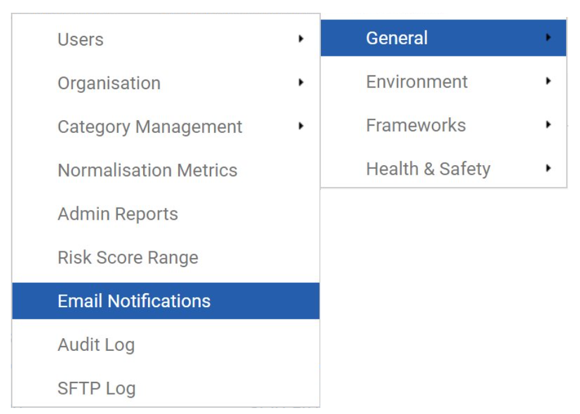
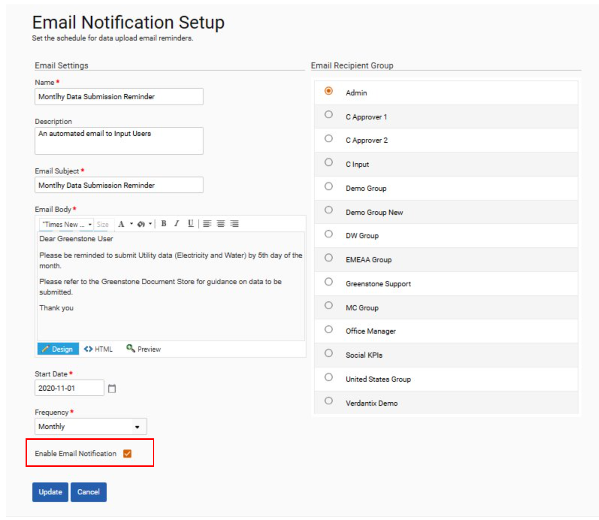
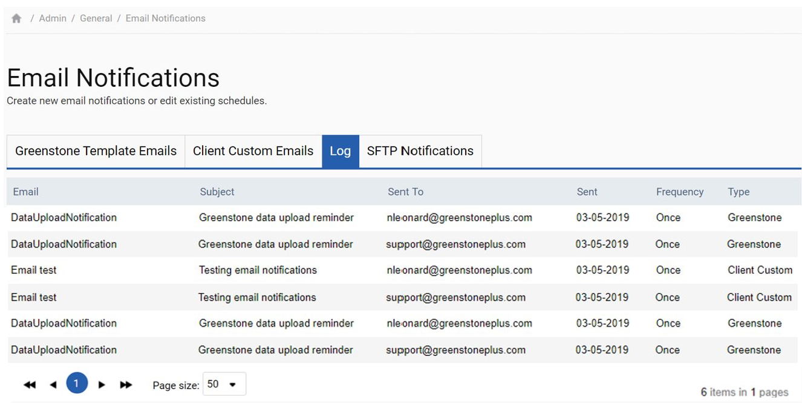

Emails can be created and sent out from ‘Admin Settings > Email Notifications’.

Four tabs are available in this section. Greenstone Template Emails, Client Custom Emails, Log and SFTP Notifications.
Greenstone Template Emails and Client Custom Emails allow the users to send out regular reminder notifications to one or many user groups using template email body or a customized email body. To create a custom email, select the Add Email button. Give your email notification a name, description and fill in the email subject and body. The start date indicates the day the email will first be sent, and the frequency allows the user to specify the interval between which the notification will be resent. Select the user group(s) that should receive the email and select Enable Email Notification and save to turn the notification on.

Notification groups can be set up in the ‘User Groups’ section of the ‘Admin Settings > Users’ menu.
The Log tab contains a list of all the emails that have been sent from the system.

Finally, the SFTP Notification tab allows the user to specify the user group(s) who should be notified of errors in files uploaded by SFTP and to toggle this notification on and off. To do so, select the “FileProcessErrorCalc” notification. User groups can be selected on the right-hand side and the email can be toggled on and off by selecting the Enable Email Notification box. When you are finished select the Save button to confirm your changes or Cancel to revert them.